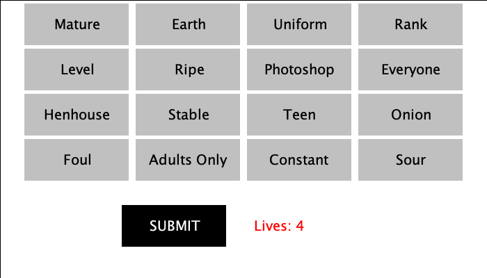
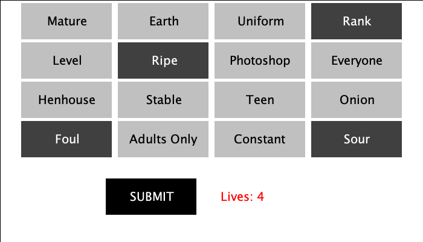
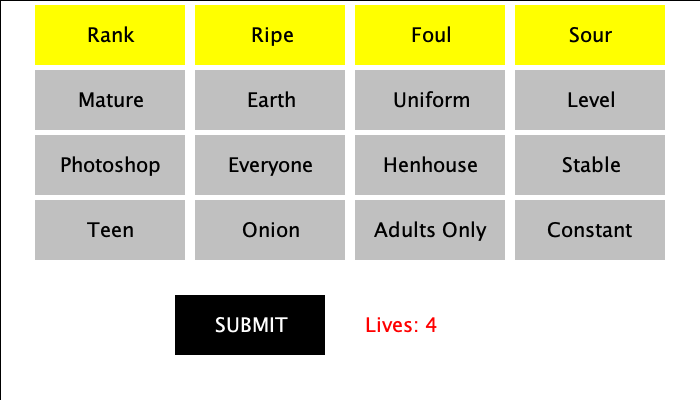
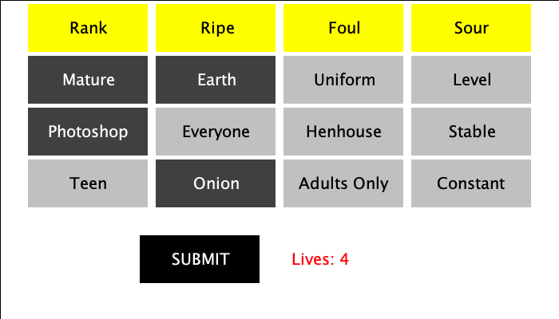
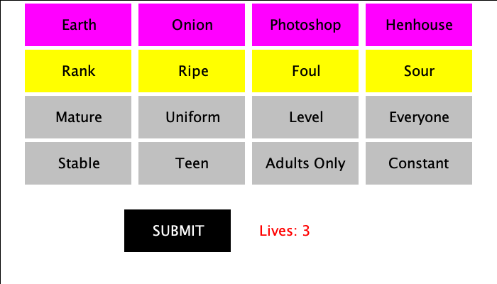
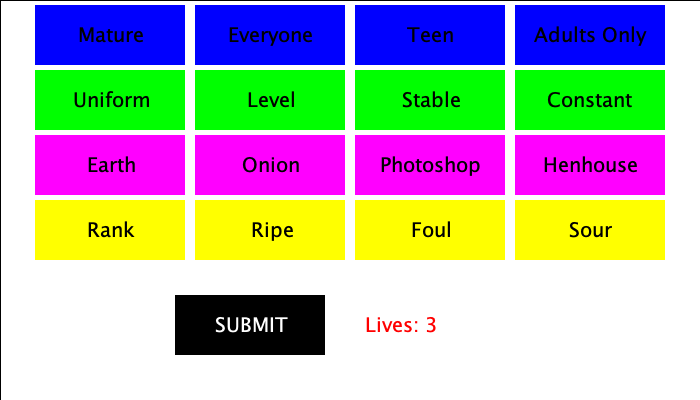

Connections Recreated
The goal of this project was to demonstrate understanding of game state management and event-driven programming by recreating The New York Times' word-grouping puzzle game Connections in Java, with mouse and keyboard input.
Technologies:
- Java
Source code is private. Available upon request.
Showcase





